PMS ระบบบริหารผลการปฏิบัติงาน — ตอนจัดทำ PA
4 ประเภทภาระงานในหน้าข้อตกลง
ภาระงานที่ 1 = งานยุทธศาสตร์มหาวิทยาลัยและแผนกลยุทธ์ส่วนงาน · ที่ 2 = งานประจำตามตำแหน่ง · ที่ 3 = งานที่ได้รับมอบหมาย · ที่ 4 = งานเพื่อส่วนรวม แต่ละข้อมีข้อตกลง ตัวชี้วัด เป้าหมาย และเกณฑ์ให้คะแนน
ทางเข้าและหน้าตา
- Intranet: เว็บกองทรัพยากรบุคคล → ระบบงานต่างๆ → ไอคอน PMS ระบบใหม่ (คนละปุ่มกับไอคอน e-PA ระบบเก่า)
- Internet:
https://op.mahidol.ac.th/hr/หัวข้อ SYSTEM → PMS - Login: Internet Account ชื่อ.นามสกุลอังกฤษ 3 ตัว
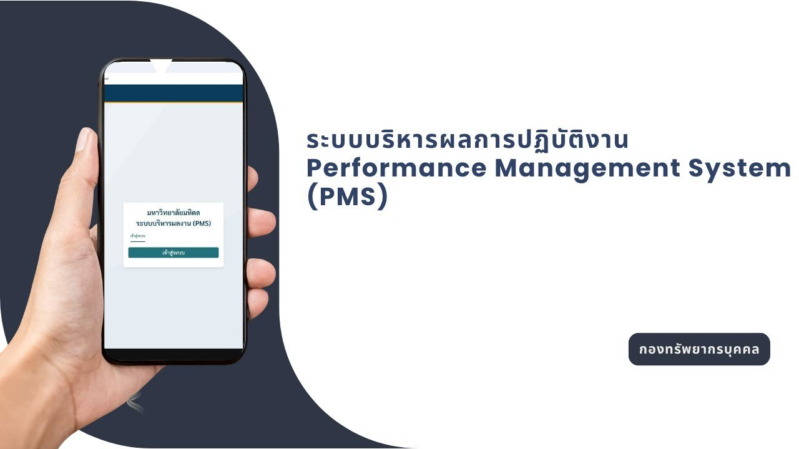
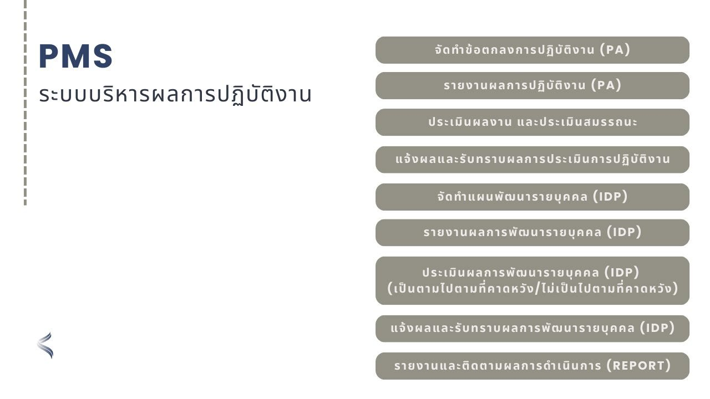
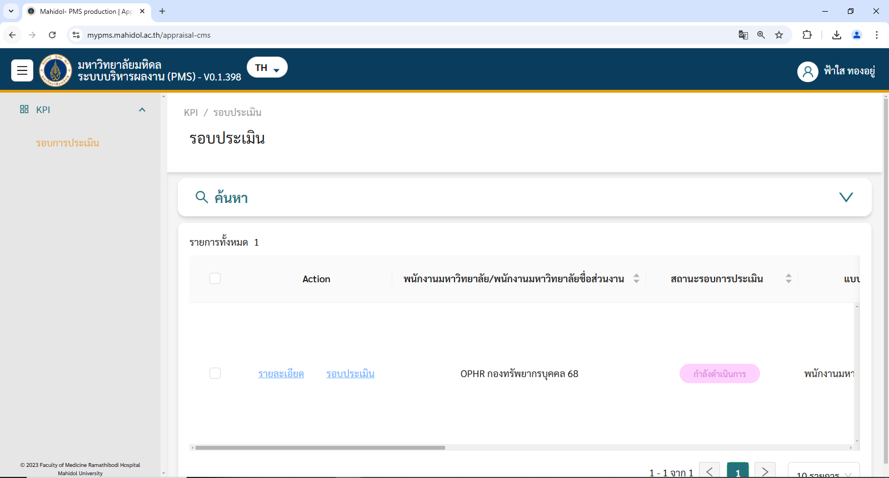
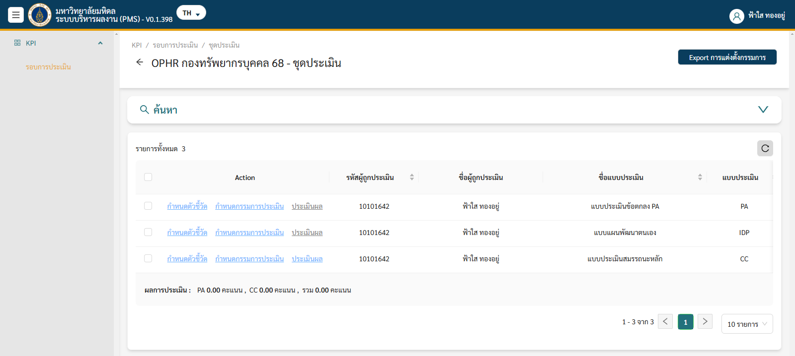
หน้ากรอก PA ในระบบ — โครงสร้าง 4 ชั้น
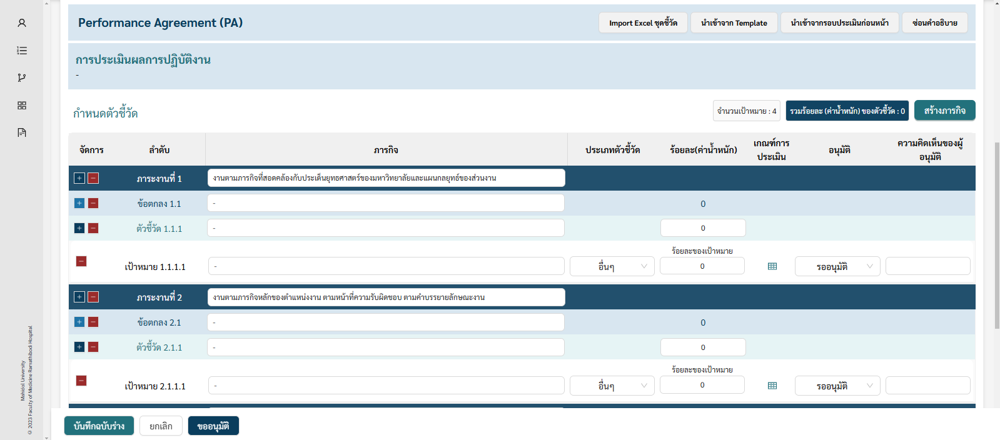
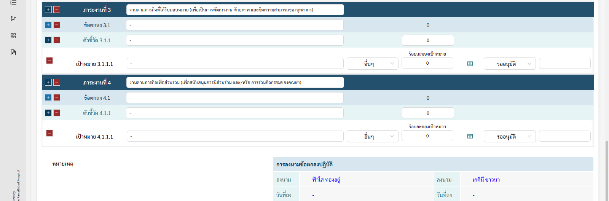
ลำดับชั้นต่อภารกิจ: ภาระงานที่ N → ข้อตกลง N.x → ตัวชี้วัด N.x.x → เป้าหมาย N.x.x.x
ปุ่มล่าง: บันทึกฉบับร่าง / ยกเลิก / ขออนุมัติ · มุมบนขวาโชว์รวมร้อยละค่าน้ำหนัก
กรณีที่ 1 กรอก Excel Macro แล้ว Import
ดาวน์โหลด MDsource
แตกไฟล์ เปิด Excel Macro ถ้าถูกบล็อกต้อง Enable Content
ชีต PA
กรอกชื่อ ตำแหน่ง สังกัด แล้วกรอก 8 คอลัมน์: ประเภทภาระงาน 1–4, ลำดับเรียง 1,2,3…, ข้อตกลง, ประเภทตัวชี้วัด 5 แบบ, หมายเลขตัวชี้วัด, รายละเอียด, น้ำหนักข้อตกลง, น้ำหนักตัวชี้วัดรวม 100 ต่อข้อ
ชีต Criteria
คัดลอกข้อตกลงมา แล้วกรอกเกณฑ์ 5 ช่วงให้ครบ
ชีต import
กดแล้วต้องขึ้นข้อความ import data generated complete. ไม่งั้นกรอกไม่ครบหรือไม่ถูก
Copy ไปไฟล์ xlsx ใหม่
ตั้งชื่อเอง แล้วเข้า myPMS → กำหนดตัวชี้วัดของแบบ PA → Import จับคู่คอลัมน์ครบ → ตรวจ error
ส่งขออนุมัติ
สถานะเปลี่ยนเป็น “ขออนุมัติ” ให้ประธาน (หัวหน้า) พิจารณา
กรณีที่ 2 กรอกในระบบ
- ข้อตกลงกับตัวชี้วัด พิมพ์ข้อความให้เหมือนกัน
- ประเภทตัวชี้วัด: เวลา ปริมาณ คุณภาพ ความคุ้มค่า ความพึงพอใจ
- ร้อยละของเป้าหมายในแต่ละข้อตกลงรวมได้ 100
- กำหนดเกณฑ์แต่ละช่วงคะแนน แล้วบันทึก → ขออนุมัติ
ประธานอนุมัติข้อตกลง
- ค้นจากชื่อสกุลหรือแบบประเมิน แล้วเข้ากำหนดตัวชี้วัดทีละคน
- ตรวจรวมร้อยละค่าน้ำหนัก
- อนุมัติทีละข้อ หรือกดอนุมัติทั้งหมด
- ถ้าจะส่งกลับแก้: เปลี่ยนเป็น ไม่อนุมัติ แล้วใส่เหตุผลด้านหลังช่องนั้น
รายงานผลการดำเนินงานและประเมินตนเอง
จากชุดประเมินกด ประเมินผล ของแบบ PA → คลิกรายงานผลทีละเป้าหมาย → พิมพ์คำอธิบาย แนบไฟล์ ใส่คะแนนตนเอง
ข้อควรระวังในสไลด์
ตรวจคะแนนให้แน่ใจก่อนกดส่ง เพราะ ส่งแล้วแก้ไขไม่ได้
ตัวอย่างเกณฑ์ในกล่องรายงานผล: สูงกว่าเป้าหมาย 9–10 · ตามเป้าหมาย 7–8 · ใกล้เคียง 5–6 · ต่ำกว่า 3–4 · ต่ำกว่ามาก 0–2
หน้าที่ Admin (สไลด์ใน PMS1)
Admin มหาวิทยาลัย
นำเข้าโครงสร้างส่วนงาน บุคลากร ผู้บังคับบัญชา ผู้บริหาร · ให้คำปรึกษาการใช้ระบบ
Admin ส่วนงาน
กรอกโครงสร้างลง Excel ที่มหาวิทยาลัยกำหนด · สร้างรอบและปฏิทิน · ตรวจชุดประเมิน PA IDP CC FC MC ให้ครบตามตำแหน่งของแต่ละคน · นำเข้ากรรมการ · ติดตามตามปฏิทิน
ประเมินสมรรถนะ แจ้งผล และแผนพัฒนาตนเอง
แถบสถานะของแบบประเมิน
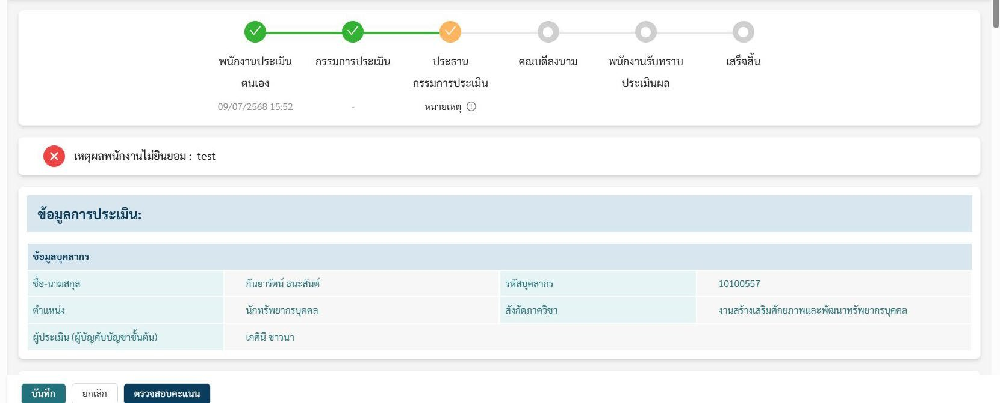
ผู้รับการประเมิน: CC / FC / MC
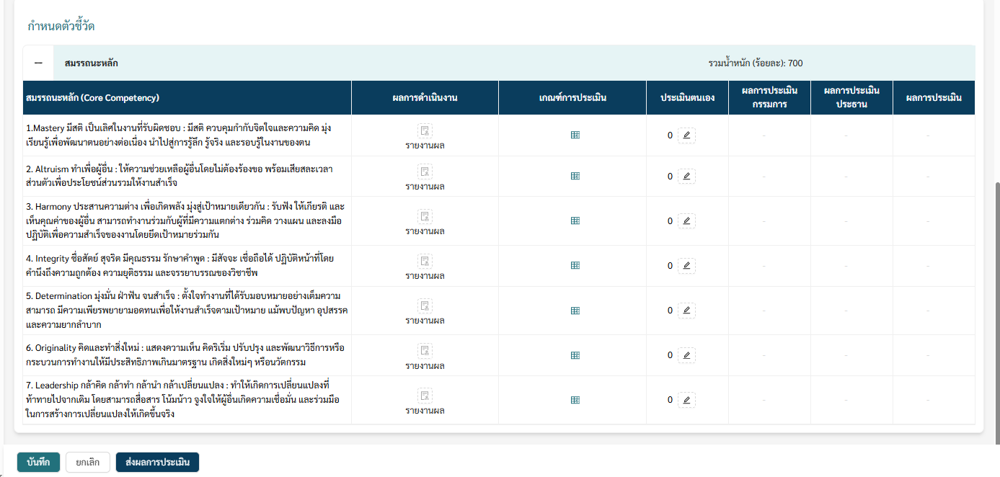
- Mastery มีสติ เป็นเลิศในงาน
- Altruism ทำเพื่อผู้อื่น
- Harmony ประสานความต่าง
- Integrity ซื่อสัตย์ สุจริต
- Determination มุ่งมั่น ฝ่าฟัน
- Originality คิดและทำสิ่งใหม่
- Leadership กล้าคิด กล้าทำ
- กดรายงานผล พิมพ์พฤติกรรม แนบไฟล์ได้ แล้วใส่คะแนนตนเอง
- FC ขึ้นตามตำแหน่งและช่วงอายุงาน ไม่ใช่ชุดเดียวกันทุกคน
- MC เฉพาะผู้ดำรงตำแหน่งบริหาร
- ส่งผลการประเมินแล้วแก้ไม่ได้
กรรมการให้ความเห็น
เข้าประเมินผลของแบบ PA / CC / FC / MC → คลิกแต่ละเป้าหมายหรือแต่ละรายการ → เขียนความเห็น และใส่ตัวเลขกำกับได้ (ไม่บังคับว่าเป็นคะแนนหลัก) → ต้องครบทุกข้อ แล้วส่งให้ประธาน
ประธานให้คะแนน
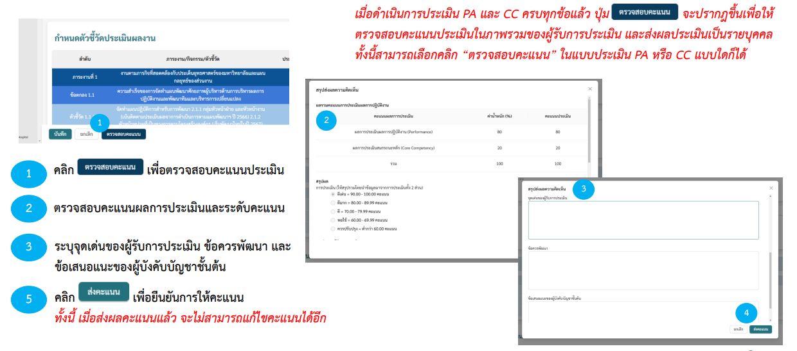
- ให้คะแนนในช่องคะแนน + ความเห็นในช่องความเห็น บันทึกค้างได้
- ระดับในภาพตัวอย่าง: ดีเด่น 90–100 · ดีมาก 80–89.99 · ดี 70–79.99 · พอใช้ 60–69.99 · ควรปรับปรุง ต่ำกว่า 60
- กดส่งคะแนนแล้วแก้ไม่ได้
แจ้งผลและรับทราบ
- เปิดแบบ PA หรือ CC ดูรายข้อ แล้วกดตรวจสอบสรุป
- คลิกรับทราบในแบบ PA หรือ CC = รับทราบทั้งสองแบบพร้อมกัน
- FC รับทราบแยก · MC รับทราบแยกถ้าเป็นผู้บริหาร
กรณีไม่เห็นด้วย
- ต้องระบุเหตุผลละเอียดชัดเจน
- ไม่เห็นด้วยในแบบ PA หรือ CC → สถานะ ทั้ง PA และ CC กลับเป็นประธานกรรมการประเมิน
- ไม่เห็นด้วย FC หรือ MC กดในแบบนั้นโดยเฉพาะ
จัดทำ IDP
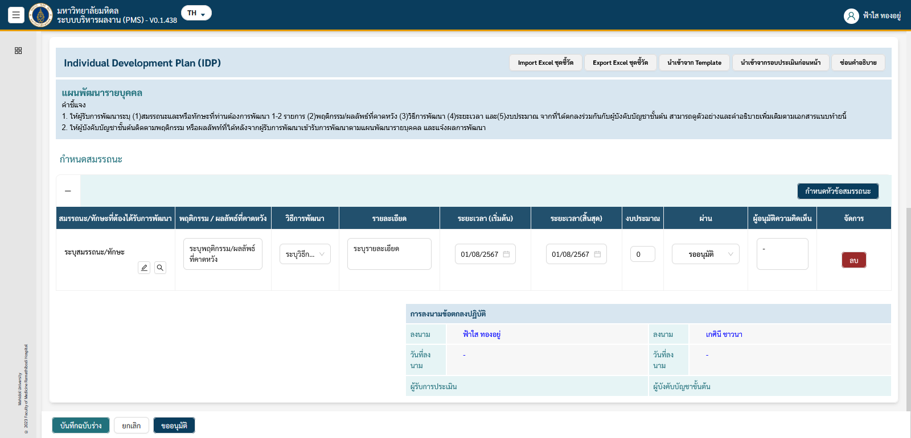
กรอก 7 ช่อง: สมรรถนะหรือทักษะ · พฤติกรรม/ผลลัพธ์ที่คาดหวัง · วิธีการพัฒนา dropdown รูปแบบ 70 / 20 / 10 · รายละเอียด · วันเริ่ม · วันสิ้น · งบประมาณ (ไม่มีใส่ 0)
บันทึกฉบับร่าง → ขออนุมัติ · ประธานอนุมัติทีละข้อหรือทั้งหมดเหมือน PA
ตอนรายงานผล IDP: พิมพ์รายงานการพัฒนา แนบไฟล์ ส่งแล้วแก้ไม่ได้
ผลที่ประธานให้เป็นข้อความ เป็นไปตามที่คาดหวัง หรือ ไม่เป็นไปตามที่คาดหวัง
รับทราบผล IDP ได้ และกดไม่เห็นด้วยพร้อมเหตุผลได้ สถานะจะกลับไปที่ประธาน
รายงานภาพรวม
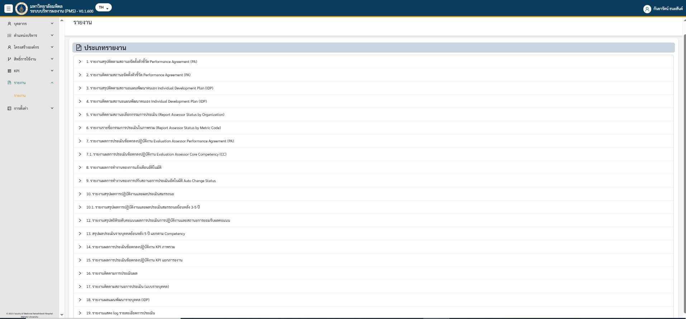
เงื่อนไขสำคัญของ PMS2
- CC มี 7 ข้อคงที่ของมหาวิทยาลัย ไม่ใช่ชุดที่คณะคิดเองในหน้านี้
- คนกดตรวจสอบคะแนน/ส่งคะแนนคือประธาน และต้องครบทั้ง PA และ CC
- สัดส่วนใน Dialog ตัวอย่างคือ PA 80 + CC 20
- IDP ไม่ควรเกินประมาณ 2 รายการต่อปี
- ส่งรายงานผล PA / สมรรถนะ / IDP แล้วแก้ไม่ได้